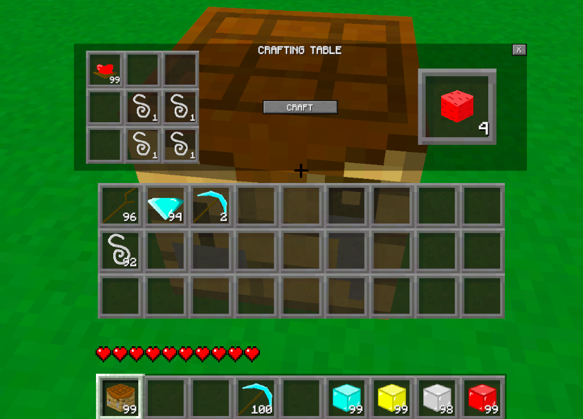
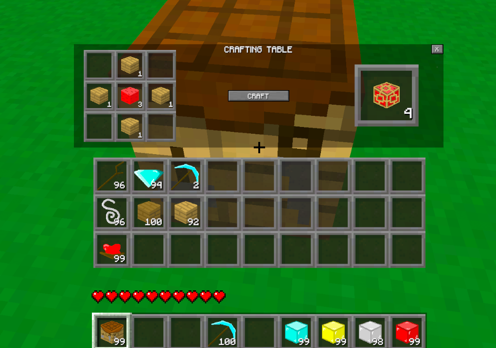
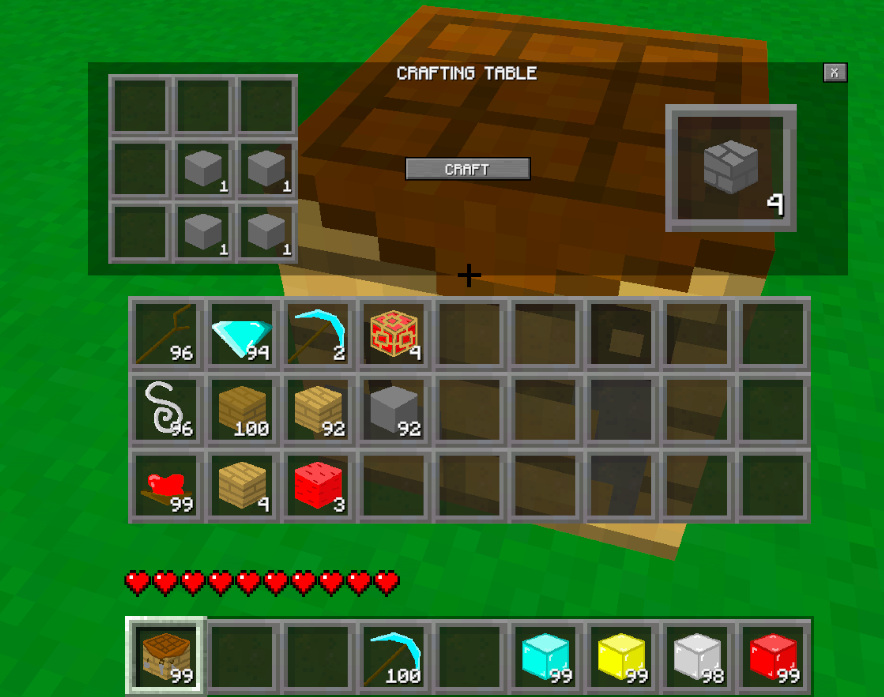
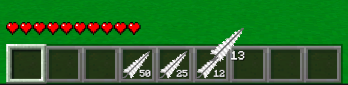
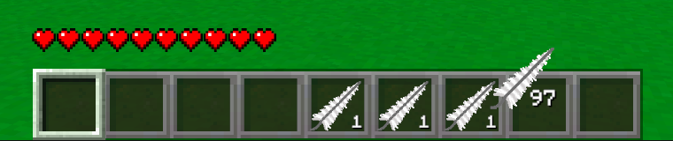
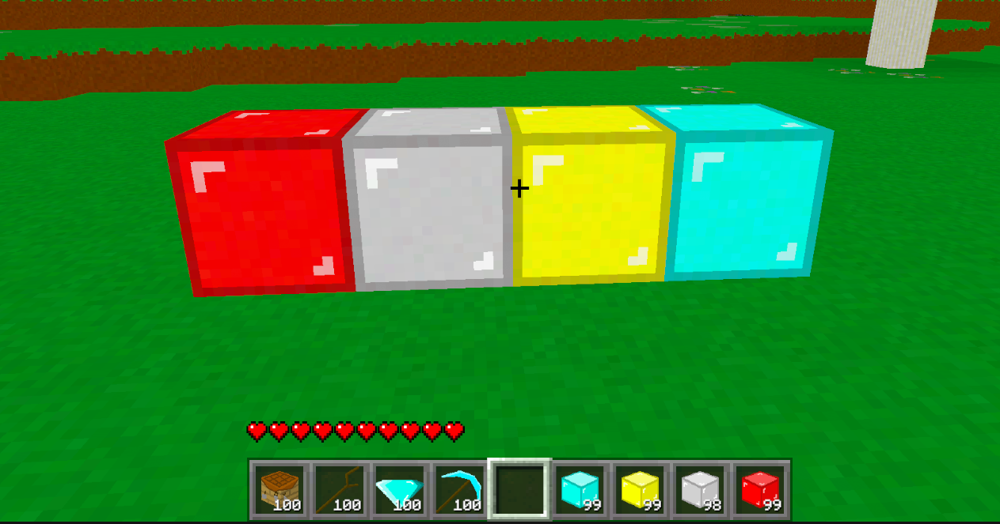
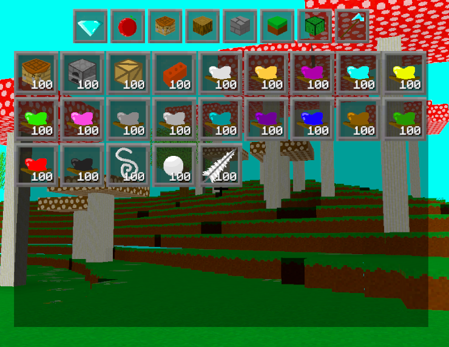

Devlog Four Overview
Yah, I don't think anybody is surprised by the theme of this devlog. Kinda hinted pretty hard at it in the last devlog that I wanted to work on crafting. And it was some work, for all the wrong reasons, let me tell you.
While working on this update I found quite a few over sights I had made in my programming, and that led me down quite a rabbit hole. But it's working quite nicely now, thankfully.
Main Features
The main feature of this devlog is of course the new crafting feature. It's very similar to how crafting works in Minecraft. The main exception is that mine isn't as dynamic. Which just means that the player has to be specific with where they place items in the crafting table. They also can't substitute blocks in a recipe, such as using two different wood types to make a stick: it has to be two of the same type.
The crafting system was actually pretty simple to set up, and that's mainly because I was so, so, lazy about it. I set up scriptable objects (basically data containers) for the recipes, and these had a list that I could input the ingredients into. The crafting table would look through it's nine slots, and cross reference the items within against the array of recipes. If the recipe ingredients and crafting table slots both had the right items in the right slots, then an item could be crafted. Just had to press the button to craft. Hopefully I explained that right. It was simple to set up at the very least. Anyways, here are a few of the recipes I have in the game, because pictures are nice to look at.



I'll likely spend some time far in the future re-working this and making it more dynamic and what not, but I just wanted something in the game that'd work. And now I have that.
Now, along with the crafting table, I had to make how items moved around the inventory more user friendly. Previously the player could only select whole stacks of blocks and move them into different slots. But now, the player can split stacks in half, drop a single item from a stack, and merge stacks into one. This is where quite a bit of my time went.


Basically when I had something working, I would notice a stupid problem. Let me give you an example. I mentioned you could split a stack in half. I didn't think players would try that with only 1 item in the stack. I only did it by accident, and got two stacks of 1 and 0 in number of items. Glad I found that before a player did. Another annoyance I found: I mentioned how the player could drop a single item. I didn't think they would keep going even after the stack hit 0 items. I would think they would just combine the stacks. But if the player did it one by one, they could enter into the negative for the number of items in the stack. What I'm getting at is that there were so many conditions such as these, that I for some reason didn't think about, and I would only realize at a later point. Forcing me to come back and add another few lines of code. There was so much of this... but it's done now! Thankfully.
Blocks
During the last devlog I added a bunch of new blocks, so I didn't even think of adding any for this update. I still did though, but only a few that I had a feeling players might try to craft. That would be the blocks of diamond, iron, and gold. Which every player in Minecraft has built a house out of. So, really they're essential to have in the game, and it's criminal I haven't added them until now.

Items
Most of the items in the game that I have been adding have been blocks: placeable items. But now I can really start to add items into the game that are meant to be used within the menus of the game. This would be stuff like iron ingots, or string, or sticks, or other things along those lines. I currently don't have anything substantial that isn't already in Minecraft, but I have been adding a lot of these types of items already. Like the 16 different dye colours I added.

There are of course more 'menu items' than in the picture above, but I just wanted to show off a few. Not that I'm an artist and they look good - just that I'm happy the game is starting to fill out some more. And pictures are nice to look at. Also for the ores of the game, the blocks do look different so that colour blind people can tell them apart. It's good practice to do. I was lazy and didn't change how the dye colour icons look (except their colours); at least for now. I have limited time and wanted to not do that right then. I know it'll be a problem in the future.
Conclusion
This is a slightly shorter devlog, but I finished what I wanted to and want to work on another aspect of the game. I'm trying to keep the information within a devlog contained around a certain part of the game that I was working on. For this devlog, that would be crafting.
Also I know the UI within the game looks bad. There is a reason for that: I'm still using a combination of Unity art and Minecraft art. I haven't made anything for myself yet for anything involving the UI. Other than the icons themselves of course. The look of the UI will come in a far future devlog when I have more UI related systems in the game. Like the furnace for instance, which still does nothing as of yet.
I'm not sure what I'm going to do for the next devlog. There is so much to choose from and I'm always wanting to work on something new. I know I'm really trying to get to the point where I can get people into the game to start doing stuff, so I need to start cracking down and start working on more core features. That would be stuff like being able to pick up the dropped items, being able to punch a tree, and not just chop it with an axe only, or crafting not only in the crafting table, but the small version (2x2) inside the player's inventory. Then there's also the enemies, hunger, combat, and so much more. So, maybe the next devlog will be something from that list. Who really knows though.